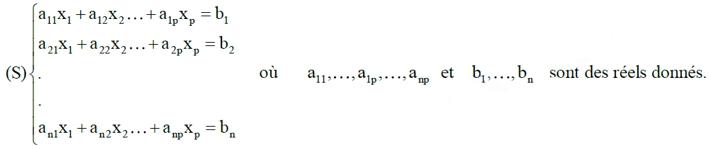
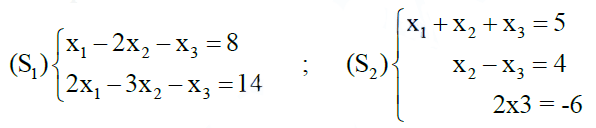
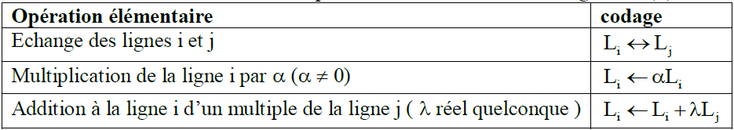
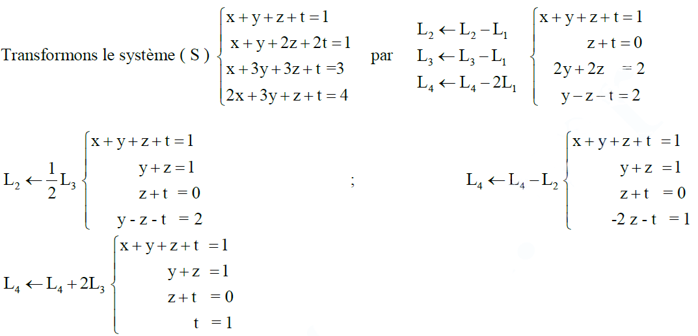
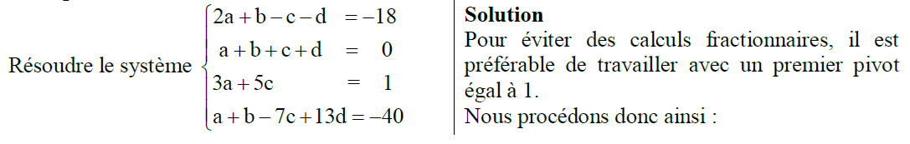
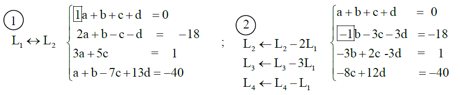
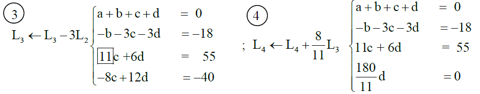
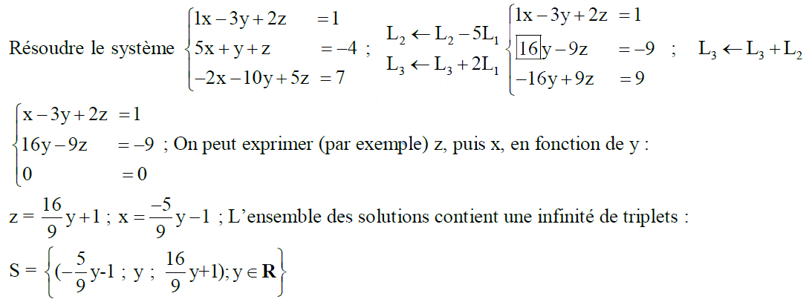
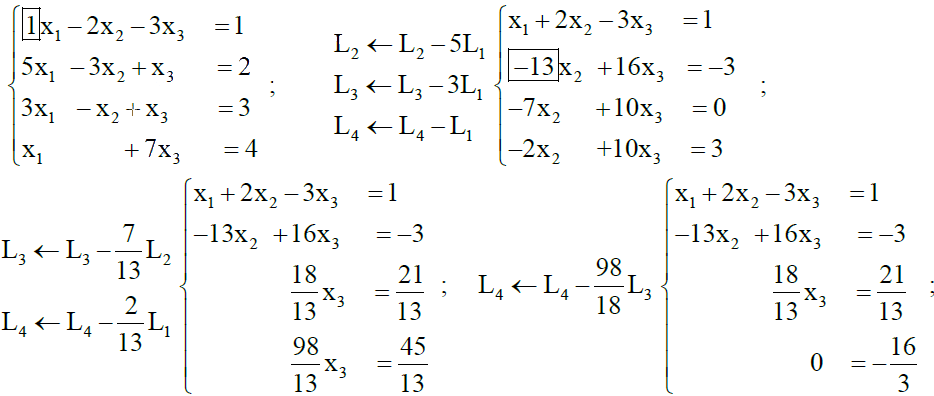

Systèmes Linéaires
I - Définitions
1) Définition 1
On appelle système linéaire de n équations aux p inconnues x1 ; x2 ; …xp le système

+ on dit aussi que ( S) est un système à n lignes et p colonnes.
+ si n = p, ( S ) est un système carré.
+ les réels a11, a22 et ann sont les coefficients diagonaux du système. Lorsque les coefficients situés sous la diagonales sont nuls ( aij = 0 , pour tous i et j tels que i > j ), le système est triangulaire supérieur.
+ une solution de (S) est un p-uplet (x1 ; x2 ; …xp) vérifiant simultanément les n- équations.
Résoudre (S) c’est déterminer l’ensemble de ces solutions.
Exemple

(S2) est carré et triangulaire supérieur ; ( 7 ; 1 ; -3) est une solution de (S1) et (S2).
2) Définition 2
Deux systèmes (S) et (S’) sont équivalents s’ils ont le même ensemble de solutions, autrement dit si toute solution de (S ) est solution de (S’) et réciproquement.
II – Opérations élémentaires sur les systèmes
1) Codage
On note Li la ième ligne d’un système (S) .
Le tableau ci-dessous rassemble les opérations élémentaires sur les lignes de (S) et leur codage.

2) Théorème
On passe d’un système ( S) à un système ( S’) équivalent :
+ en échangeant l’ordre des inconnues de ( S), ce qui revient à échanger deux colonnes de ( S).
+ en suppriment dans (S) deux lignes identiques
+ en procédant à une opération élémentaire sur les lignes de ( S).
Exemple

Le système obtenu est triangulaire supérieur. Il se résout aisément par substitution. Il a une solution
unique ( -1 ; 2 ; -1 ; 1).
III – La méthode de Gauss
1) Exposé de la méthode
L’idée
Il s’agit, par étapes successives, de transformer un système ( S ) en un système triangulaire supérieur ( S’), qui lui est équivalent.
Résoudre un tel système ( S’) sera dès lors une chose aisée, par substitution.
Les étapes ;
a) On place en L1 une ligne où le coefficient de x1 est non nul (une telle ligne existe, et ce coefficient est appelé Pivot).
On élimine l’inconnue x1 dans L2,…, Ln par Li ← Li + λL1 (λ à calculer pour chaque i ≥ 2)
b) S’il existe parmi L2,…, Ln une ligne où le coefficient de x2 est non nul, on la place en L2 , et on utilise ce coefficient comme nouveau pivot.
On élimine l’inconnue x2 dans L3,…, Ln par Li ← Li + λL2
c) Ainsi de suite, jusqu’à obtenir une forme triangulaire.
2) Mise en oeuvre
Exemple



Du dernier système, nous déduisons successivement : d = 0 ; c = 5 ; b = 3 ; a = -8.
L’ensemble de solutions est S = {(-8 ; 3 ; 5 ; 0)} ; solution unique.
3) Cas particuliers
Un système linéaire n’a pas toujours une solution unique, même s’il est carré. Nous en utilisons ici deux exemples résolus par la méthode de Gauss.
Exemple 1 :

Exemple 2 : Résoudre le système

La dernière équation n’ayant pas de solution, l’ensemble de solutions est vide.
S = Φ